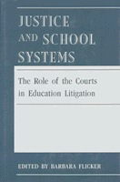

Examines the effectiveness and deficiencies of judicial intervention into the problems of racial discrimination in education
Examines the effectiveness and deficiencies of judicial intervention into the problems of racial discrimination in education


 Examines the effectiveness and deficiencies of judicial intervention into the problems of racial discrimination in education
Examines the effectiveness and deficiencies of judicial intervention into the problems of racial discrimination in education

|  |
Justice and School SystemsThe Role of the Courts in Education Litigationedited by Barbara Flickercloth EAN: 978-0-87722-675-8 (ISBN: 0-87722-675-X) |
"Highly qualified scholars examine here in great detail policy-related activities of courts on three very important educational topics...a unique volume."
—Louis Fischer, University of Massachusetts at Amherst
This book examines the effectiveness and deficiencies of judicial intervention in solving the problems of discrimination in the nation’s schools. The authors present case studies, surveys, and interviews of the lawyers and judges who participated in the leading cases. And they analyze critical issues that remain unresolved, such as the battle over racial desegregation that still rages in Yonkers, New York.
"This project is an important effort to develop a more accurate description and interpretation of the evolving roles of courts in the management of very complex educational litigation."
—Gary Orfield, University of Chicago
Part I: Introduction
1. Overview of Judicial Activism in Education Litigation – Howard I. Kalodner
Part II: Educational Opportunities for Children with Handicaps
2. Jose P. V. Ambach: Special Education Reform in New York City – Michael A. Rebell
3. Allen V. McDonough: Special Education Reform in Boston – Michael A. Rebell
Part III: Equal Educational Opportunities for Women
4. Judicial Oversight of Agency Enforcement: The Adams and WEAL Litigation – Rosemary Salomone
Part IV: Equal Access and Educational Opportunities for Racial and Linguistic Minority Students
5. Endless Journey: Integration and the Provision of Equal Educational Opportunity in Denver's Public Schools: A Study of Keyes v. School District No. I – James J. Fishman and Lawrence Strauss
6. Voluntary Interdistrict School Desegregation in St. Louis: The Special Master's Tale – D. Bruce La Pierre
7. Desegregation in Chicago: Settlement without a Trial – Allen E. Shoenberger
Part V: Assessment of the Court's Appropriate Role in Education Litigation
8. The View from the Bench: Judges in Desegregation Cases – Barbara Flicker
9. The View from the Bar: An Examination of the Litigator's Role in Shaping Educational Remedies – Paul L. Tractenberg
Barbara Flicker is former Executive Director and currently Consulting Director of the Institute of Judicial Administration Inc.
Law and Criminology
Political Science and Public Policy
Education
© 2015 Temple University. All Rights Reserved. This page: http://www.temple.edu/tempress/titles/693_reg.html.